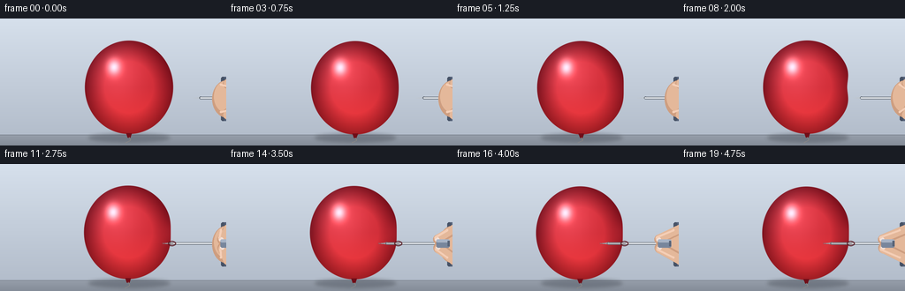
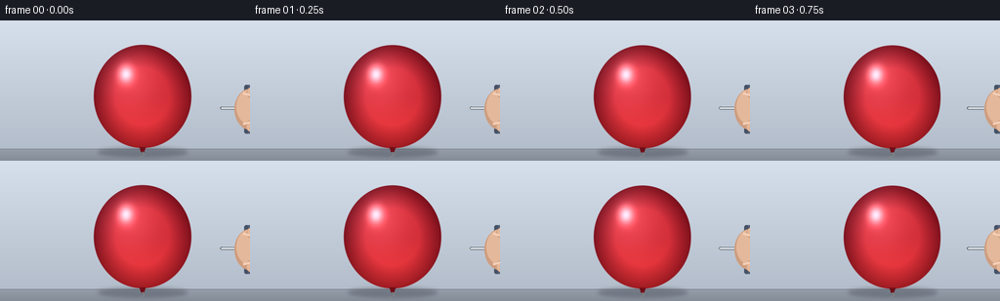

CODING AGENTS AS PIXEL WORLD MODELS
traex/Seed-2.1-Pro-0915 · phygen_021
点击播放 · 原生 RGB 像素
逐轮保存的候选
回放视频、检查图与代码变化。
每份候选均可单独播放。实际图片检查记录在下方工具轨迹中。
候选 01播放与检查图
点击播放 · 原生 RGB 像素


展开代码变化
--- 上一保存版本
+++ 本次保存版本
@@ -0,0 +1,239 @@
+"""Generate a 20-frame RGB video: a hand slowly presses a needle into a balloon.
+
+Pure procedural rendering with numpy + PIL. The scene is rendered at 3x
+resolution and downsampled for smooth edges, then saved through artifact_io.
+"""
+import math
+from pathlib import Path
+
+import numpy as np
+from PIL import Image, ImageDraw, ImageFilter
+
+import artifact_io
+
+CASE_DIR = Path(__file__).parent
+W, H, N, FPS = 256, 144, 20, 4.0
+S = 3 # supersampling factor
+SW, SH = W * S, H * S
+
+# Balloon geometry (final-pixel units)
+C0 = np.array([146.0, 78.0])
+RX, RY = 50.0, 53.0
+SURFACE_X = C0[0] + RX * math.sqrt(1 - ((90 - C0[1]) / RY) ** 2)
+NEEDLE_Y = 90.0
+TIP_START, TIP_END = 218.0, 164.0
+SHAFT_LEN = 78.0
+
+
+def ease(t):
+ return 0.5 - 0.5 * math.cos(math.pi * t)
+
+
+def make_background():
+ """Wall gradient, floor band and soft contact shadow (supersampled)."""
+ yy = np.linspace(0, 1, SH, dtype=np.float32)[:, None]
+ top = np.array([214, 224, 236], dtype=np.float32)
+ bottom = np.array([176, 186, 200], dtype=np.float32)
+ wall = top[None, None] * (1 - yy[..., None]) + bottom[None, None] * yy[..., None]
+ img = np.repeat(wall, SW, axis=1).copy()
+
+ floor_y = int(132 * S)
+ fy = np.linspace(0, 1, SH - floor_y, dtype=np.float32)
+ floor = np.array([150, 158, 170], dtype=np.float32) - (fy * 18.0)[:, None, None]
+ img[floor_y:] = floor
+ img[floor_y - 1:floor_y + 1] = (120, 128, 140)
+
+ pil = Image.fromarray(img.astype(np.uint8), "RGB").convert("RGBA")
+ shadow = Image.new("RGBA", (SW, SH), (0, 0, 0, 0))
+ sd = ImageDraw.Draw(shadow)
+ sd.ellipse([(C0[0] - 46) * S, 130 * S, (C0[0] + 46) * S, 140 * S], fill=(30, 35, 45, 70))
+ shadow = shadow.filter(ImageFilter.GaussianBlur(2 * S))
+ pil.alpha_composite(shadow)
+ return pil
+
+
+def balloon_layer(frame_idx, center):
+ """Deformed glossy balloon as an RGBA float layer (math in final pixels)."""
+ t = frame_idx / (N - 1)
+ e = ease(t)
+ tip_x = TIP_START + (TIP_END - TIP_START) * e
+ gap = tip_x - SURFACE_X
+ if gap > 0:
+ dimple = 5.5 * np.clip(1 - gap / (TIP_START - SURFACE_X), 0, 1)
+ ring_strength = 0.0
+ penetration = 0.0
+ else:
+ penetration = min(-gap, 40.0)
+ dimple = 1.8
+ ring_strength = min(1.0, penetration / 8.0)
+
+ xs = (np.arange(SW, dtype=np.float32)[None, :] + 0.5) / S
+ ys = (np.arange(SH, dtype=np.float32)[:, None] + 0.5) / S
+ dx = xs - center[0]
+ dy = ys - center[1]
+ theta = np.arctan2(dy, dx)
+ q = np.sqrt((dx / RX) ** 2 + (dy / RY) ** 2)
+ dent = dimple * np.exp(-(theta / 0.30) ** 2) # inward dent on the right
+ boundary = 1.0 - dent / RX
+ alpha = np.clip((boundary - q) / 0.012 + 0.5, 0, 1)
+
+ layer = np.zeros((SH, SW, 4), dtype=np.float32)
+ inside = alpha > 0
+
+ rim = np.clip((q - 0.55) / 0.45, 0, 1)
+ col = (np.array([206, 44, 54], np.float32)[None, None] * (1 - rim[..., None])
+ + np.array([118, 14, 26], np.float32)[None, None] * rim[..., None])
+ bounce = np.clip(dy / RY, 0, 1)[..., None] * np.array([40, 14, 8], np.float32)
+ col = col + bounce
+
+ sheen = np.exp(-(((dx + 14) / 30) ** 2 + ((dy + 20) / 34) ** 2))
+ spec = np.exp(-(((dx + 17) / 7.5) ** 2 + ((dy + 23) / 9.0) ** 2))
+ col += sheen[..., None] * np.array([36, 30, 34], np.float32)
+ col += spec[..., None] * np.array([165, 165, 170], np.float32)
+
+ contact = np.exp(-(((dx - (SURFACE_X - center[0])) / 12) ** 2 + (dy / 14) ** 2))
+ col += (contact * (0.25 + 0.75 * ring_strength))[..., None] * np.array([28, 10, 10], np.float32)
+
+ layer[inside, :3] = np.clip(col[inside], 0, 255)
+ layer[..., 3] = alpha * 255
+ return layer, tip_x, gap, penetration, ring_strength
+
+
+def capsule(draw, p1, p2, width, fill):
+ """Round-capped thick line; coordinates and width in final-pixel units."""
+ p1 = (p1[0] * S, p1[1] * S)
+ p2 = (p2[0] * S, p2[1] * S)
+ w = max(1, int(round(width * S)))
+ draw.line([p1, p2], fill=fill, width=w)
+ r = w / 2
+ for x, y in (p1, p2):
+ draw.ellipse([x - r, y - r, x + r, y + r], fill=fill)
+
+
+def draw_needle(base, tip_x):
+ """Full metallic needle (the portion inside latex is masked later)."""
+ layer = Image.new("RGBA", (SW, SH), (0, 0, 0, 0))
+ d = ImageDraw.Draw(layer)
+ tip = (tip_x, NEEDLE_Y)
+ shoulder = (tip_x + 9, NEEDLE_Y)
+ hub_end = (tip_x + SHAFT_LEN, NEEDLE_Y)
+ half_w = 1.15
+ d.polygon(
+ [(tip[0] * S, tip[1] * S),
+ (shoulder[0] * S, (shoulder[1] - half_w) * S),
+ (shoulder[0] * S, (shoulder[1] + half_w) * S)],
+ fill=(190, 198, 206, 255))
+ capsule(d, shoulder, hub_end, half_w * 2 + 0.8, (96, 104, 114, 255))
+ capsule(d, shoulder, hub_end, half_w * 1.2, (214, 220, 226, 255))
+ capsule(d, (shoulder[0], shoulder[1] - 0.35), (hub_end[0], hub_end[1] - 0.35),
+ 0.55, (248, 250, 252, 255))
+ base.alpha_composite(layer)
+
+
+def draw_inner_tip(base, tip_x, penetration):
+ """Needle segment inside the translucent stretched latex, faintly visible."""
+ if penetration <= 0:
+ return
+ layer = Image.new("RGBA", (SW, SH), (0, 0, 0, 0))
+ d = ImageDraw.Draw(layer)
+ capsule(d, (tip_x, NEEDLE_Y), (SURFACE_X + 0.5, NEEDLE_Y), 1.7, (120, 96, 100, 105))
+ base.alpha_composite(layer)
+
+
+def draw_entry_ring(base, ring_strength):
+ """Small stretched-latex ring where the needle crosses the surface."""
+ if ring_strength <= 0:
+ return
+ layer = Image.new("RGBA", (SW, SH), (0, 0, 0, 0))
+ d = ImageDraw.Draw(layer)
+ a = int(190 * ring_strength)
+ x, y = SURFACE_X, NEEDLE_Y
+ rw, rh = 4.6, 3.0
+ d.ellipse([(x - rw) * S, (y - rh) * S, (x + rw) * S, (y + rh) * S],
+ outline=(78, 10, 18, a), width=max(1, int(1.4 * S)))
+ d.ellipse([(x - rw + 1.4) * S, (y - rh + 1.0) * S,
+ (x + rw - 2.6) * S, (y + rh - 1.6) * S],
+ outline=(232, 120, 120, int(a * 0.55)), width=1)
+ base.alpha_composite(layer)
+
+
+def draw_hand(base, tip_x):
+ """Stylised fingertips and sleeve gripping the needle hub at the right."""
+ hub_x0 = tip_x + SHAFT_LEN - 13
+ hub_x1 = tip_x + SHAFT_LEN + 2
+ skin = (228, 184, 154, 255)
+ skin_dark = (206, 158, 128, 255)
+ skin_light = (244, 206, 182, 255)
+
+ layer = Image.new("RGBA", (SW, SH), (0, 0, 0, 0))
+ d = ImageDraw.Draw(layer)
+ d.rounded_rectangle([250 * S, 66 * S, 262 * S, 116 * S], 3 * S, fill=(86, 99, 122, 255))
+ d.rounded_rectangle([250 * S, 66 * S, 254 * S, 116 * S], 2 * S, fill=(70, 82, 102, 255))
+ d.ellipse([240 * S, 70 * S, 272 * S, 112 * S], fill=skin_dark)
+ d.ellipse([242 * S, 71 * S, 268 * S, 106 * S], fill=skin)
+
+ idx_a, idx_b = (258, 74), (hub_x0 + 2, 85.5)
+ thm_a, thm_b = (258, 108), (hub_x0 + 3, 95.0)
+ capsule(d, idx_a, idx_b, 11.5, skin_dark)
+ capsule(d, (idx_a[0], idx_a[1] - 1.0), (idx_b[0], idx_b[1] - 1.0), 9.5, skin)
+ capsule(d, thm_a, thm_b, 12.5, skin_dark)
+ capsule(d, (thm_a[0], thm_a[1] + 1.0), (thm_b[0], thm_b[1] + 1.0), 10.5, skin)
+ for px, py in (idx_b, thm_b):
+ d.ellipse([(px - 3.4) * S, (py - 2.2) * S, (px + 1.6) * S, (py + 2.2) * S],
+ fill=(246, 226, 216, 235))
+ capsule(d, (250, 75), (idx_b[0] - 3, idx_b[1] - 2.2), 2.4, skin_light)
+ capsule(d, (250, 106), (thm_b[0] - 3, thm_b[1] + 2.0), 2.4, skin_light)
+ base.alpha_composite(layer)
+
+ hub = Image.new("RGBA", (SW, SH), (0, 0, 0, 0))
+ hd = ImageDraw.Draw(hub)
+ hd.rounded_rectangle([hub_x0 * S, 85.5 * S, hub_x1 * S, 94.5 * S],
+ 2 * S, fill=(120, 134, 156, 255))
+ hd.rounded_rectangle([hub_x0 * S, 85.5 * S, hub_x1 * S, 88.5 * S],
+ 1.5 * S, fill=(168, 180, 198, 255))
+ hd.rectangle([(hub_x1 - 2.2) * S, 87 * S, hub_x1 * S, 93 * S], fill=(88, 100, 120, 255))
+ base.alpha_composite(hub)
+
+
+def draw_knot_and_string(base, center):
+ layer = Image.new("RGBA", (SW, SH), (0, 0, 0, 0))
+ d = ImageDraw.Draw(layer)
+ kx, ky = center[0], center[1] + RY - 1
+ d.polygon([(kx - 3.2) * S, ky * S, (kx + 3.2) * S, ky * S, (kx + 1.4) * S, (ky + 5) * S,
+ (kx - 1.4) * S, (ky + 5) * S], fill=(112, 14, 24, 255))
+ pts = []
+ for u in np.linspace(0, 1, 14):
+ px = kx + math.sin(u * math.pi * 1.4) * 4.0 * u
+ py = ky + 4.5 + u * (141 - (ky + 4.5))
+ pts.append((px * S, py * S))
+ d.line(pts, fill=(150, 140, 130, 200), width=max(1, int(0.9 * S)))
+ base.alpha_composite(layer)
+
+
+def render_frame(frame_idx):
+ t = frame_idx / (N - 1)
+ e = ease(t)
+ center = C0 + np.array([-1.6 * e, 0.55 * math.sin(2 * math.pi * t * 1.3)])
+
+ base = make_background()
+ balloon, tip_x, gap, penetration, ring_strength = balloon_layer(frame_idx, center)
+ base.alpha_composite(Image.fromarray(balloon.astype(np.uint8), "RGBA"))
+ draw_knot_and_string(base, center)
+ draw_needle(base, tip_x)
+ draw_inner_tip(base, tip_x, penetration)
+ draw_entry_ring(base, ring_strength)
+ draw_hand(base, tip_x)
+
+ rgb = base.convert("RGB").resize((W, H), Image.LANCZOS)
+ return np.asarray(rgb, dtype=np.uint8)
+
+
+def main():
+ frames = np.stack([render_frame(i) for i in range(N)], axis=0)
+ assert frames.shape == (N, H, W, 3) and frames.dtype == np.uint8
+ artifact_io.save(frames, CASE_DIR)
+ print(f"saved {N} frames {W}x{H} at {FPS} fps -> {CASE_DIR}")
+
+
+if __name__ == "__main__":
+ main()
可观测工具轨迹
实际执行的命令与返回图片。
命令 1exit 0
/bin/bash -lc 'ls -la && cat prompt.txt && cat GENERATION_RULES.md && cat task_spec.json'
命令 2exit 0
/bin/bash -lc 'cat artifact_io.py'
命令 3exit 0
/bin/bash -lc 'cd . && python generate.py && ls -la'
保存候选 1 份；完成命令 3 次；可验证图片返回 0 张。原始 API 响应与完整日志保留在本地。